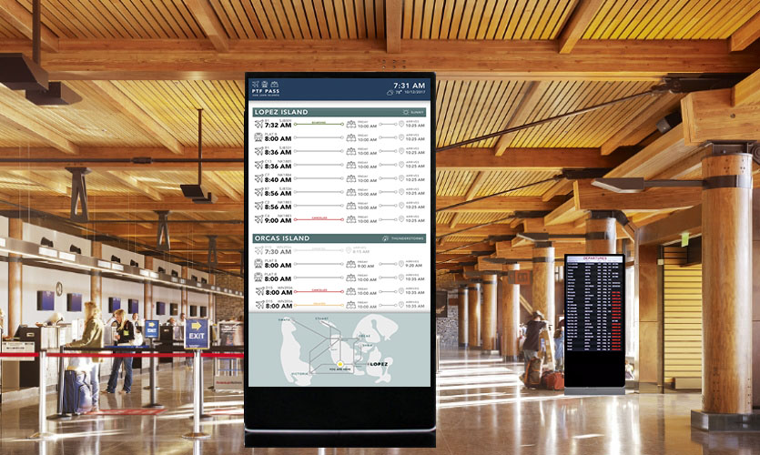

Environmental Display for San Juan Islands
The San Juan Islands environmental display is the final deliverable of a research and design project of how to visualize transportation data to people at a main transportation hub to satisfy user and business stakeholder needs. Our team of three was given a data set including plane, train, and ferry trip data, and was tasked with creating a cohesive display for people to understand trip details. This project combined these methods: data visualization, personas, competitive analysis, bodystorming, and user needs validation.